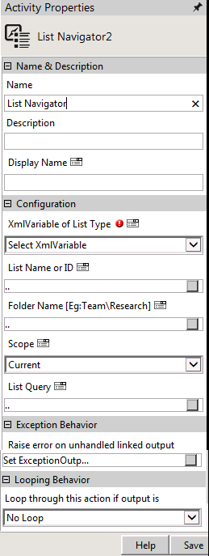
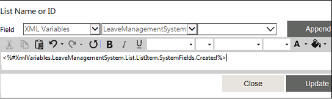

No
Activity Description
The List Navigator activity is used to change the scope of the XML List XML variable during the workflow execution.
Usage Scenario
Telematics Project Managers can submit ad hoc requests for list of overdue tasks assigned to all team members. The request triggers a workflow that goes through every item in the Task List to build a report of tasks with overdue status.
Activity Properties
The List Navigator activity has to be configured by specifying appropriate values for the different properties in the Activity Properties area. The Activity Properties can be accessed by clicking the Activity Properties tool in the tool bar or by selecting the appropriate option from the right-click menu for the List Navigator activity. The Activity Properties are organized under the following groups of related properties. The properties under each group are described in this topic.

Name & Description
The properties in the Name & Description group have been described below. You can use these properties to specify the name and description for the activity.
Name - This property can be used to specify a name for the activity.
Property Type: Optional (This property needs to be set only if necessary.)
Description - This property specifies a brief description to be displayed for the activity.
Property Type: Optional (This property needs to be set only if necessary.)
Display Name - This property specifies the name to be displayed for the activity in the Web Work Item List.
Property Type: Optional (This property need not be set if the display name is already configured in the Actions.xml. The name entered here overrides any display name that is configured for this activity in the Actions.xml file.)
Configuration
The properties in the Configuration group have been described below. You can use these properties to configure the functionality of the activity.
XMLVariable of List Type - This property is used to select the XML variable of List type (XML List).
Property Type: Mandatory
Steps to set the XMLVariable of List Type
Select an XML variable from the XMLVariable of List Type drop-down list.
See XML List Navigator Activity - XMLVariable of List Type for a detailed description of the XMLVariable of List Type property window
.
List Name or ID - This property is used to specify the list name.
Property Type: Optional
Steps to set the List Name

See List Navigator: List Name or ID for a detailed description of the List Name property window.
Folder Name - Enter the folder name.
Property Type: Optional (This property needs to be set only if necessary.)
Scope - This property allows you to change the scope of the XML variable during the workflow execution.
Property Type: Optional
Steps to set the Scope
List Query - This property is used to build the query for the list.
Property Type: Optional
Steps to set the List Query
Note: While building query to fetch the items, you need to specify the table name with column name in a Where clause. For example, SKEUsers.Title="WonderwareSkeltaBPM";
See List Navigator: List Query for a detailed description of the List Query property window.
Looping Behavior
The property in the Looping Behavior group has been described below. You can use this property to specify the looping behavior of the activity.
Loop through this action if output is - This property is used to specify the condition for looping the activity by selecting an activity output from the drop down.
Property Type: Optional (This property needs to be set only if necessary.)
Activity outputs:
The List Navigator Activity returns the following values -
Action completed: Triggers this output when action is completed.
List Item Not Found: This output will be given for the activity, when the list query specified does not return any items.
Note: Enable Errors Encountered Output property of List Navigator should be set as No to capture this output.
Exception Behavior
These options of AVEVA AVEVA Work Tasks 2009 have now been integrated with Raise Error on Unhandled Linked Output and Exception Email Template Configuration in the latest version of the product.
Each activity has the Raise Error on Unhandled Linked Output property on click of which, it shows all the default configured mapped error outputs in red with their check boxes selected.
See Mapped Error Outputs for more details.
Property Type: Optional (This property needs to be set only if necessary.)